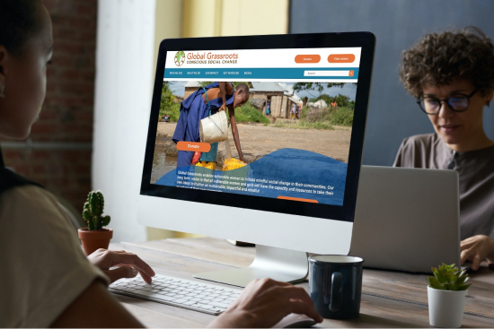
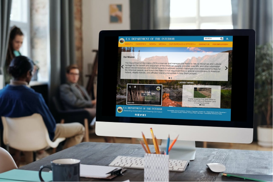
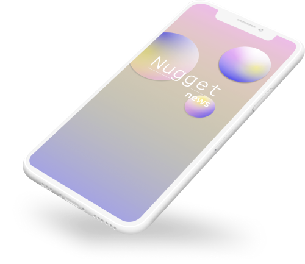

A Registered Nurse turned UX Designer. Passionate about building projects from research and ideation to execution. Strengths in communication and storytelling with a love for UX writing and visual wireframing and prototyping. Posesses all the qualities of a registered nurse: empathy, a team player, adaptability, organization skills, attention to detail and ability to keep calm under pressure. Coupled with a love of research and design- a valuable addition to any team!
Recent Work

Global Grassroots Redesign
A complete redesign of the landing page, navigation bar and donation page/ user flow for a non-profit organization called Global Grassroots based out of New Hampshire.
Role: UX Researcher, UI designer, UX Writer
Tools used: InVision, Figma, Miro, Adobe XD

Department of Interior Redesign
A complete redesign of the landing page and navigation bar of the government website for the U.S. Department of the Interior.
Role: UX Researcher, UI designer, UX Writer
Tools used: InVision, Figma, Miro, Adobe XD

Nugget Mobile Application
A mobile application that set out to solve the problem of too many upsetting and distracting notifications with breaking news from traditional news apps. This app puts control back into the user’s hands with highly customized notification settings and allows for mindfulness and a highly curated news feed based on mental health check-ins.
Role: UX Researcher, UI designer, UX Writer
Tools used: InVision, Figma, Miro